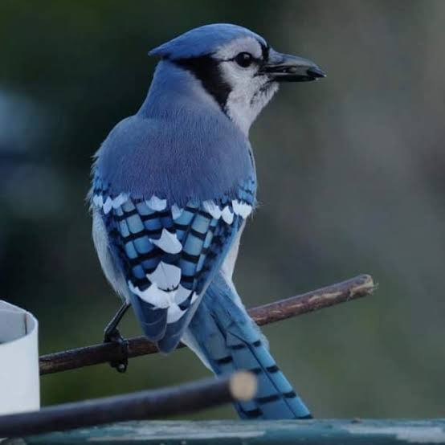

A gralha-azul (Cyanocorax caeruleus) é um dos animais mais emblemáticos da Região Sul do Brasil, reconhecida
oficialmente como a ave símbolo do estado do Paraná. Com sua plumagem azul-viva e cabeça preta, ela se
destaca na fauna local e possui grande valor cultural e sentimental para as populações locais.
O Papel na Dispersão do Pinheiro-do-Paraná
Além de sua beleza, a ave desempenha um papel ecológico fundamental na preservação da Floresta de Araucárias
por conta do seu hábito de enterrar pinhões para estocá-los como alimento. Muitas dessas sementes acabam
esquecidas no solo, germinando e dando origem a novas árvores, o que torna a gralha-azul uma verdadeira
semeadora natural da região.

Preservação e Ameaças à Espécie
Apesar de sua relevância, a gralha-azul enfrenta desafios constantes relacionados à perda de seu habitat
devido ao desmatamento e à redução das florestas nativas. Proteger a espécie envolve garantir a
conservação das matas de araucária restantes, assegurando a sobrevivência tanto da ave quanto do
ecossistema do qual ela depende.